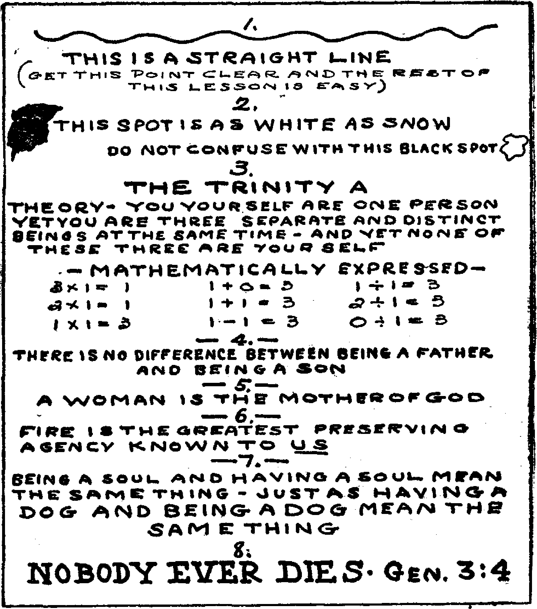
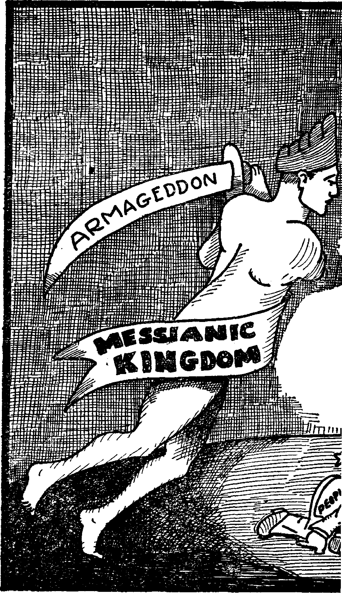
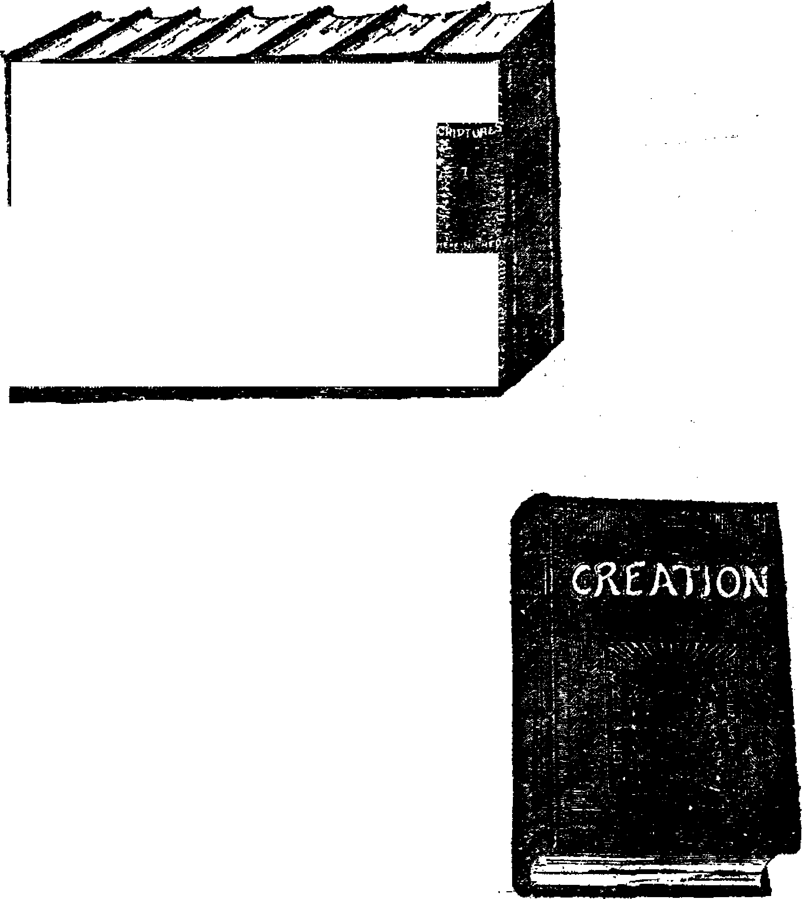

X.
Brooklyn, N. Y», Wednesday, May 2, 1928
Number 225
ITALY is said to be having some success in fighting malaria from the air. This is accomplished by scattering paris green over marsh-lands.
SOVIET Russia is making gas masks and is training school children in their use. That is a news item long enough to make anybody stop and think.
IN THE great city of Berlin there were only forty murders last year. The perpetrators of thirty-eight of these have already been caught, and twenty-four of the number have suicided. The police force of the city is about 19,000 men.
IT IS estimated that in six years, at the present rate of increase, the Panama canal will be insufficient to handle the traffic that will then desire to pass through it. For the past three years its traffic has been considerably in excess of that passing through Suez.
Approximately 4,000 children are enrolled in 292 sight-saving classes in the United States. These classes are for the little ones with weak or defective eyes. It is found that these little folks, taught by specially selected teachers, with the best lighting facilities and with special desks and methods of visual
instruction, make as rapid progress in their
studies as others who have the best of vision. New York city has sixty-eight of these special • class rooms in its public school system.
ONE ton of Straw now produces 640 pounds of carbon, 10 gallons of vegetable tar, 40 gallons of another fluid and 12,600 feet of gas. It is now bringing the farmer about $8.50, whereas a few years ago it was considered an almost total waste and was often burned to get rid of it.
Fewer Farmers Every Year
EVERY year, in the United States, there are 400,000 fewer farmers. At least that has been the average net loss for the last five years. Last year was an exception, the net loss having fallen to 193,000. Unemployment in the cities is keeping more boys on the farm.
A MERICAN financiers are now rapidly brty-ing up the world. They have invested four and one-half billion dollars in Europe, four billion dollars in Canada, three billion dollars in Central America, two and one-half billion dollars in South America and one billion dollars in Asia.
Another Health Center in Palestine
Nathan Stkaus, who, during the past thirteen years, has contributed one million dollars to the cause of the Jews in Palestine, has given the money for the erection of a new health center at Tel-aviv, which will be open to all nations and creeds, the same as the one which he founded at Jerusalem.
Hundreds Balk at Vaccination
RATHER than have their blood stream polluted by vaccination, 735 pupils of Green Bay, Wisconsin, have accepted a fourteen-day suspension from school. This is an inconvenience for the children and their parents and a financial disappointment to those who had expected to dispose of the vaccine pus.
R
BAKED clay tablets discovered recently in the ancient capital of the Hittite empire reveals the sad fact that the Hittite kids had to study ancient languages, the same as the rising generation of the present day. Eight languages have been uncovered in these ruins, including Sumerian, the oldest known.
SLAVERY has been formally abolished in the British West African colony of Sierra Leone, resulting in the freeing of 250,000 slaves. The most remarkable thing about this is that they were not freed long ago. There are still some eighteen countries in the world practising slavery. It is estimated that there are two million slaves in Abyssinia; also many in Arabia.
Professor John Garstang, of the Institute of
Archaeology, University of Liverpool, who has been conducting archaeological work in Palestine for some years, declares that the story of Joshua’s campaigns, as recorded in the Bible, is now proven to be so absolutely correct that the course followed by the victorious Israelites can be plainly traced from point to point.
J.
IN THE last ten years fifty million dollars has been sent to Palestine, to help put the country on its feet. American Jews this year are trying to raise seven and one-half million dollars for the same purpose. In the ten years more than four thousand war orphans have been cared for. World-wide unemployment conditions have affected Palestine also of late.
J Alfred Spender, noted English author and
• former editor of the liberal magazine The Westminster Gazette, and the first American Fellow of the English-speaking Union, has recently visited the United States. He finds much in American journalism to admire but is depressed at the amount of space given in American papers to the disgusting details of crime. Let us hope that his opinions, worth much on this subject, may be given due weight by our editors.
THE greatest diamond find in history has just been made in South Africa on lands belonging to the South African Republic. In a visit of one hour the Minister of Mines picked up stones worth $3,000, and in six weeks twenty men recovered diamonds valued at $800,000. The find is located at the mouth of the Orange River.
ESTHONIA, one of the new Baltic states, created out of what was once Russian territory, is making progress. The little state is and has always been agricultural, and hence finds little space in the news of the day. The big estates of the nobility are being put into the hands of the people, forty thousand new farms having been created in 1927.
Mussolini has ordered that fascism He made world-wide. All Italians are expected to become fascists, to refrain from taking part in the internal politics of the country where they reside, and to obey without question the orders of the Italian consuls and fascist chiefs. The organization abroad includes the fascist Boy Scouts.
IN ELEVEN months a British firm has built and launched in seven sections the Singapore floating dry dock, a structure made of twenty thousand tons of steel and large enough to accommodate 60,000 people within its walls. A Dutch firm, believed the only one capable of doing so, will tow it to Singapore, using eight tugs in what will likely take four months. It will go in two parts.
A CORONER’S jury in Colorado rendered the following verdict: “Klemente Chevez came to death on the afternoon of January 12 from gunshot wounds fired by state police whose names are unknown to the jurors. Said shooting was unprovoked and said state police showed a total disregard for human life.” Colorado must have a nice kind of civilization and nice men upholding it. Or would the "lower regions” be better?
A VERMONTER who makes a specialty of photographing snow crystals reports that I in a single storm recently he took photographs I of one hundred new varieties, and that during I the past winter one hundred eighty new forms of snow crystallization were discovered. Nothing in nature is more exquisite than the varied forms of snow crystals.
rpjIE Annual Report of Secretary Mellaai J- states that the total money eost of th© World War to the United States Government from April 6, 1917, to June 30, 1927, was $47,957,272,333. It certainly was an expensive piece of business to make the world safe for hypocrisy ; but that end seems to have been attained, so why complain I
Who Is to Be Believed?
| LEAKING their cue from one another, the Min- TXT’HO is to be believed, the president, who ; 1 isterial Alliances in various cities East, ’ ’ . says that in building a new billion-dollar
! West, North and South, are out with demands -that there be no Sunday funerals, because it j is cutting into their regular business. These ,■ ______ ___
i Sunday funerals will eventually all fall into the • hands of the Bible Students who are willing to ? serve them without money and without price.
p ■
i Stock Dividends Not Taxable *
L ___ .
J TpIGHT years ago the Supreme Court ruled that stock dividends are not taxable as in-
J come. Since that time 10,245 corporations have ' distributed $6,253,818,026 in stock, all of which
If _
[ went to the shareholders. If the bulk of this I had gone to the workers it would have made it I easier for them to bear the present era of wide-| spread unemployment.
. fPlllRTY-ONE years ago a homed toad was ■ buried alive in a corner-stone of the East-5 land, Texas, courthouse. At the expiration of [that time the building was torn down, and the | toad, sealed into its living tomb without light, air or water, for a score and a half of years, F was found alive and is still living. It will be well cared for during the remainder of its life.
CLAD in an asbestos suit, Tex Thornton, famous oil man, recently extinguished a i burning oil well at Corpus Christi, Texas, which had burned for itself a hole 200 feet t in diameter and 125 feet deep. The flames were j put out by two hundred quarts ,of nitroglycerin ) shoved into the midst of the volcano by the | power of a stream of water. The nitroglycerin I was brought seven hundred miles in an auto-I mobile by Thornton’s wife, and in jig time; this t in itself is a most remarkable achievement.
navy there is no thought of competitive armaments, or his secretary of the navy, who admits that the purpose of the huge naval program was competition with Great Britain? George Washington Cherry Tree Hatchet! What are we coming to?
THE Wilson espionage act under which, during the World War, two thousand citizens were sent to prison (some of them under sentence for as long as twenty years) for daring to exercise their constitutional rights, is still on the books, and will be kept there by Big Business, so that when they get ready to bring on th© next war none will dare open their mouths.
AN INVESTIGATOR of the fives of the very poor in London found women hiding the fact that in midwinter the only belongings they had in the world were a skirt, jacket and boots, without any pretense of underwear, stockings or anything else. He found that these poor women will suffer any conceivable misery rather than reveal their destitution to anybody*
MOVING pictures have actually been sent across the Atlantic, from London to Hartsdale, New York. They were not very good pictures, but were plain enough to show that the problem has been solved. Telephone service across the Atlantic has been put in operation between the United States and Germany. We are getting so used to these wonders that we fail of even remote appreciation of their vast significance. The human family is fast becoming one in reality.
486
TJie GOLDEN AGE
Brooklyn, N. Y« ,
EXPERIENCE has shown that moving picture films last only about five years, when they begin to deteriorate. Thus the hopes or fears of some that the scenes of the World War would be preserved by this means are brought to an end. Perhaps it is just as well. The Scriptures, speaking of the present evil time, says that when the Millennium is in full swing “the former things shall not be remembered nor come into mind”.
HE health authorities of Bundaberg, near Sydney, Australia, have caused the death of
at least eleven children, probably more, as the result of diphtheria inoculation. As a result of the use of this serum there is a panic in the neighborhood, and an increasing protest against the pollution of the human blood stream by such means.
THE suspicion that tonsils may have some value to somebody besides the surgeons who make a specialty of removing them, and who frequently take precious lives in doing so, is aroused by the bulletined information from the United States Public Health Service that rheumatism, heart disease, ear troubles, measles, whooping cough, chicken pox, mumps and defective teeth are all more prevalent among those who have had their tonsils removed than among those that have continued to go along with all the parts that God gave them originally.
SENDING them through on false waybills, declaring that they were agricultural machinery and that they were intended for Czechoslovakia and ultimately for Poland, the Fascisti have been caught in the act of shipping five carloads of machine guns from Verona, Italy, to a point in Hungary. Neither the Czechoslovakian nor the Polish government knows anything about this shipment, and the Hungarian government, the Horthy regime, refuses to make any explanation. The plan of the Fascisti to grab the world by force has received a temporary setback. In defiance of the League of Nations, Hungary sold the guns for $413 to a junkman, thus disposing of the evidence.
MILLIONS of people in Manchuria live on beans, their staple food. Along comes the profit-mad banker. Last fall these bankers bought about all the beans in the country, some thirteen thousand carloads. Now the people must pay the bank price for the beans or starve. One wonders if any western Christians are mixed up in this plan for making millions off starving people.
A N OGDEN, Utah, man has devised a safety device for airplane passengers which it is believed will solve the problem of caring for passengers and mail in case of sudden disability or distress of a plane. By the mere pulling of a lever the aviator dumps his entire load through a trap door, eliminating all necessity for thought or action on the part of the pas-senger^ A parachute is attached to each seat
Carlo Sforza, former Italian Minister of Foreign Affairs, now lecturing in the United States, declares that another world war will mean the collapse of all European institutions and the triumph of Bolshevism everywhere. Meantime, all the nations of the world having emerged from the World War without having learned a single thing, are rapidly rushing toward the next war and the Bolshevism to follow.
land which cost the:
much less than that for
THE average funeral cost in Newark, N. J., is given as $493. Funeral costs all over the United States have risen until they now absorb a major part of small estates. To say that this is foolish is putting it mildly. What possible benefit accrues to anybody for a poor widow to spend her all in an elaborate funeral for her dead husband? What aid can it be to her or to her children? To say that it costs around $400 to put a person into the ground is every bit as big a lie as the eternal torture lie, which has wrung billions from the people for the benefit of a lot of lazy loafers. In North Carolina it costs $194 on the average to bury a person. Even that is too high. In some places cemeteries are now charging $100 for a single grave, and on an entire acre.
Interesting Ford Items
THE Ford Motor Company sold its first car in July, 1903, and its fifteen millionth car on May 26, 1927. The Ford company makes its own steel and its own glass and mines its own coal, but charges only one profit, namely, that on the completed product. The horsepower of all manufactured Ford cars combined is thirty-three times that of all the stationary engines in the United States.
A USTRIA and Bavaria are aflame with do-monism in its most repellent forms. Ib Austria a miner has his body mutilated without bleeding, blood flows from stomach and knees, a large cross of blood appears on his back. In Bavaria every Friday Theresa Neuman is made to reenact the sufferings and death of Christ under horrible conditions imposed by demons who control these manifestations. The object of these demoniacal manifestations is clear.
NEW YORK man, owner of a fine police dog, went to bed with a cigarette between his lips, fell asleep and would have burned to death had not the dog dragged the blazing covers from his bed and then dragged the man himself into another room. The dog set two rooms afire instead of one, but he saved his
taster. The dog himself has too much sense to smoke cigarettes.
A N AUTHORITY estimates that the horsepower produced by coal has increased by fifty percent since 1916, but that the amount of coal burned per horsepower produced has declined at almost exactly the same rate, the result being that the net amount of coal consumed has remained virtually unchanged. The increased combustion efficiency is one of the many factors complicating the coal question.
THE New York Times of February 26 contains a most interesting article by Evans Clark, entitled “March of the Machine Makes Idle Hands”. Charts and statistics are provided to prove what every sensible person ought to have known in the first place; namely, that labor-saving machinery really saves labor, and that although the owners of the machines are getting richer and richer the condition of the workers is steadily getting more precarious. The article says truly that “at a time when American prosperity has become an international sensation, when American efficiency has become the eighth wonder of the world, the lodging houses are crowded to capacity with men who want work but can not find it, and the employment agencies struggle with hordes of applicants for jobs that do not exist”.
IN THE following statement taken from the
London Times Mussolini claims for himself and fellow fascists the divine right to rule. The statement reads: “If those who hold the reigns of power have acquired their power in accordance with a just principle and govern in accordance with reason, implying a due regard to the general welfare, which, above all, presupposes the moral welfare of the people, no one has the right to call in question the right of that government to govern. This is the divine right of any government, whether of kings or of parliaments; divine because to act reasonably and in accordance with the moral law is to fulfil the will of God.”
Mussolini has approved the following definition of fascism which appeared in the London Times: “Fascism may be defined generally as a political and social movement having as its object the reestablishment of a political and social order based upon the main current of traditions that have formed our European civilization, traditions created by Rome, first by the Empire and subsequently by the Catholic Church.”
IN VENICE, Italy, during the last week of November, 1927, a workman was tried for scratching a match on a wall poster which bore the picture of Mussolini. He claimed that he did not see the picture, did not know it was Mussolini’s, but merely wished to light his tobacco. For this offence he received a sentence of five years in the penitentiary. Stop and tT ‘nk! None but fascists may now vote in Itai... Do you wish fascism in America?
THE burglar business is having a hard time.
A burglar entered a home at Butler, Pa., one night recently, and was quietly working aw’ay at his trade when he had the tough luck to bump into a radio set and start the thing going. In the fight that followed the burglar got badly beaten up and arrested and will now have to lose considerable time from his usual avocation. No doubt he will be sore at radios from now henceforth for evermore.
HE real fight in England over the prayer book is as to whether or not the actual body and blood of Christ tike the place of the emblems commemorative of our Lord’s death, after they have been blessed by some priest. In other words, it is the fight of the Reformation all over again on the doctrine of transubstantia-tion. The bishops want the new prayer book so that they can bring about a reunion with Rome. The common people, more truthful and more honest, will not have it, and the result may be the disestablishment of the Church of England and the division of the church property between the warring factions.
Philip Gibbs* Opinion of America
hilip Gibbs, noted British newspaper correspondent, in an address at Oxford, En
gland, made the statement, “America is the most dangerous nation in the world today, because it is too highly organized and volatile, so that overnight a passion of pity or hate could sweep the country and rouse it to action which would be either beneficial or detrimental to the world.” Those who know America well can not deny the truth of these statements. Sir Philip added that “America represents progress”. And that statement is true, too.
EW YORK is used to skyscrapers, but the New York Central building about to be
erected just north of the Grand Central Terminal is something different. It is not so big, only thirty-five stories, but it is odd in that it will straddle two sets of railroad tracks, built one above another, and in addition will have two main roads for motor vehicles running right through its heart. It will be crowned by a huge lantern several stories high, illuminated at night.
A T THE Japanese coronation ceremonies to be held next November the Emperor and Empress will ride in horse-drawn carriages of state, but the distinguished foreign visitors will ride in seventeen humbler vehicles, namely,
American automobiles which will cost Japan about five thousand dollars apiece. Only royalty can afford to ride behind a horse in
these days. Anybody else would be laughed at, and maybe they will be laughed at anyway.
HE Holy City of Benares, India, with a population of 200,000 permanent residents, with hundreds of thousands more coming every year to bathe in the Ganges, has no electric lights, and no sanitary conveniences or latrines for the tens of thousands that line the banks of the holy river. The crowd is thickest where the sewage of the city seeps into the river. The priests have taught the people that bathing in these dirty waters and drinking them will wash away their sins.
OME of the languages spoken in the Philippines are Tagalog, Visayan (Cebu, Panay,
Samar-Leyte, Aklan), Ilocano, Bikol, Pampango, Pangasinan, Ibanag, Sambali, Itavi, Gaddang, Kalamian, Kuyonen, Agutaya, Ivatan, Isinai, Banton, Isamal, Dumagat, Magindanao, Sulu, Lanao (Maranao and Ilanum), Samal, Yakan, Badjao, Sanggil, Palawanos, Ifugao, Igorot, Bontok, Kalingga, Bukidnon, Banuauon, Bano-bo, Subanum, Bilaan, Tinggian, Itneg, Tag-banua, Mandaya, Bagobo, Giangga, Mangyan, Apayao, Tirurai, Tagakaolo, Ata, Tagabili, Hongot, Ibalao, Kulaman and Mangguangan. Thirteen of these languages represent groups of over 100,000 inhabitants each, while some of the remaining forty odd languages are each spoken by groups ranging from 2,000 up to 90,000. ,
UNDER the interesting title of “All Aboard for Armageddon” the St. Louis Post Dispatch writes of Secretary of the Navy Wilbur’s proposals that the United States build a billion dollar navy within eight years and deny the president the power to interfere. Admiral
I Hughes has stated that this is only a beginning and Admiral Plunkett has declared that war is inevitable and near, presumably war with Britain. Senator Borah says the whole program is ’ one of madness; and so it is, a madness affecting all the nations of earth.
A T COVERDALE, Pa., coal and iron police AA of Pennsylvania wantonly attacked a man on his own property while he was innocently engaged in constructing for his own use a little shop. The man was beaten unconscious with riot sticks, and after five days in bed was unable to rise. Ordinarily a little thing like this could be done by the Pennsylvania cossacks and no-
body could say a word, but this time it happened that a justice of the peace witnessed the whole outrage, issued an order for the arrest of the 1 offenders and they are now fugitives from justice.
Senor Don Salvador de Macdariaga, former chief of the disarmament section of the League of Nations Secretariat, at a luncheon at the Hotel Astor, New York, admitted that the League of Nations is a league of hypocrites, but was hopeful that after a while the hypocrites would get to be like the people they are pretend-i ing to be. It was supposed to be a witty remark, and received great applause; nevertheless it reveals the nature of our civilization and why it is headed for the rocks. Honesty, sincerity, kindness, is what the world must have to survive.
ALMOST every liberty-loving American was indignant when the news came that the French airplanes were bombing Syrian villages, killing men, women and children, because of the rebellion of the Druses; but so rapidly do we become callous as offenses are repeated that we never think that the airplanes of the American army have done the same thing in Nicaragua. Further, it is declared that one Nicaraguan was slain by an American lieutenant when he was approaching to surrender, with cries of “Amigo” “Amigo” on his lips. The protection ef this Brown Brothers Seligman loan is a nasty business.
TT NOW transpires that the December po-A groms in Rumania were organized by gov* ernment officials, supported by the government, aided by the army and police, and defended by the courts. In one city, Oradea Mare, the pogrom was led by the chief of police, and the mayor and his guests looked on approvingly from the balcony of his residence across the street when a synagogue was wrecked and a man killed. The owner of a hotel who defended himself and wounded two of his attackers was beaten senseless by the police and placed under arrest. His attackers went scot free.
WHAT the Shanghai massacre of students in the early summer of 1925 cost Great Britain is revealed by the fact that before the end of that year the British merchants of Hongkong reported to their home government that in three months they had lost fifteen million pounds sterling. This loss is traced directly to the effect on the Chinese people of the senseless and useless murder of these students by a British army officer who seemed to have nothing above his neck but hair and bone. The day for that kind of thing is about done, and all sensible men rejoice in the prospect.
Queens Taxpayers Lose Eight Millions
QUEENS (New York city) taxpayers have lost eight million dollars in excessive costs for sewers above what the charges should properly have been. As a sample of how the stealing was done it is of immediate present interest that all the contractors were required to buy a certain kind of pipe and from a certain man. He paid $4.25 a foot for the pipe and sold it to them at $35.00 to $45.00 a foot. As usual, the evidence has been destroyed. The public generally have ceased to hope that any of these millionaire thieves will ever be punished. The only people in danger are those who expose them.
A GREAT improvement in saving lives at sea is a plan by which amphibian airplanes carry lines from shore to vessels wrecked off shore. By this means life-lines can be carried several times as far as was possible under the system hitherto in use, namely, by firing a line from a cannon.
if mi
WINKING at the world from, the myriad scintillant eyes of her snow-wreathed lands, Canada is making a good showing in some important ways. The approaching termination of her fiscal year finds her Government wearing smiles of satisfaction in the contemplation of its financial achievements.
Her revenue for the current year will be approximately $419,000,000. Hence with an expenditure of $365,000,000, she has $54,000,000 snugly tucked away in her pocketbook to meet such exigencies as shall arise. Says the Minister of Finance: “Seldom have annual state
ments from leaders of finance and industry throughout Canada so generously reflected such progress as that of the year 1927. Our revenues have been able to meet the fixed charges, take care of increasing needs of the growing country, and provide also for a reduction of debt.” So much ior that.
Employment in Canada has been at a higher level this past year than any year since 1920. While her statistics show a 57 percent increase in the cost of living over pre-war figures, her wages show an advance of 68 to 99 percent over wages before the war.
THE phenomenal development going on in Canada along all lines is attracting the attention of the world, and while her own people have by far the greatest amount of money invested in her enterprises, which is equally true of all other countries, Canada, like the United States a few years ago, is a heavy borrower.
A short time ago her greatest creditor was the United Kingdom; but since the war a change has taken place, for she has found it to her advantage to borrow more heavily from the United States. Of the total of $5,400,000,000 foreign funds employed in the Dominion, $3,-100,000,000 is from the United States, while a little more than $2,000,000,000 is from the United Kingdom.
When the British but a short time ago had
their billions invested in the States it was quite common to hear some irresponsible Englishman
speak of Britain’s economic absorption of America, which statement Americans quite naturally resented. Unfortunately similar statemade in reference to A m eri aa’r investment la Canada. Little do such realize that two years’ returns from Canada’s field crop alone would be sufficient to wipe off her debt to the States.
Mr. Marcosson, an able contributor to the Saturday Evening Post, speaking of the relationship between Canada and the States, put the matter as follows:
< < TN PER capita trade Canada is second, and .
A in actual trade volume she ranks fifth, among the nations. Exports last year were worth nearly $1,500,000,000. The coal reserves comprise one-sixth of the world total and the
installed horsepower is second to that of the United States. Only 10 percent of her potential 32,000,000 horsepower has been harnessed. Within Canadian confines a whole universe of
energy waits to be geared to the need of man. From fish to timber, Nature has been prodigal in her gifts.
“The mineral belt is 3,000 miles in length and ; produces nearly every known useful metaL Sixty percent of available farm land awaits the ; plow and harrow. Nowhere has an equal number of people (the population is still under the 10,000,000 mark) such enormous undeveloped resources at their disposal.
“The American billions in Canada comprise no idle wealth. On no other alien soil has the
Yankee branch factory and its output become so intimately a part of the national productive life. The similarity of speech and habit is so strong that it is sometimes difficult to know where the American phase ends and the Canadian begins. Water power (that ‘white thunder harnessed to the mill’, as a Canadian poet put it) and ample raw material are the lodestones that attract. In the next article you will see in detail the concrete evidence of our activity, from newsprint and pulp to automobiles.
“There remains the diagnosis of the Canadi
an feeling for us. After running the gantlet of intermittent hostility to the United States all
the way from Europe to Latin America these last years, it was refreshing to turn to the one domain where we are less unpopular than anywhere else.
ments by irresponsible
mericans are being
“A feeling of friendly neighborlinese per-
vadea the Dominion as far as we are concerned. It would be a mistake to describe the state of mind in more enthusiastic terms. Canada has admiration for our industrial development and
Canada’s forest resources are enormous. The great woodlands are capable of producing several times the amount of lumber now being used.
for the resourcefulness of our people. Like some Continental countries, she thinks more highly of us as individuals than as a nation. She likewise appreciates the regard and esteem in which we hold her citizens. . . .
‘'There is a vast amount of loose, loud and unnecessary talk by some Americans about their ‘capitalistic conquest of Canada’. It riles our neighbors on the north in the same way that talk about our prosperity irritated the French • during the hours of their fiscal chaos in 1926. ; The intelligent American regards the employment of his cash across the line merely as part of a growing investment scheme projected in the larger interest of every one involved. He finds the Dominion a safe repository for cap-i ital.” p - ■
i K ■
I.
St. Lawrence Deep Waterways r
THE St. Lawrence Deep Waterways Scheme has been described as one of the biggest j problems that Canada has faced in years. On ■ the Welland Canal section of the Waterway the i country is committed to spend $114,000,000. i The United States will derive great benefit i from this. The work of deepening and canalizing the St. Lawrence river from Kingston to Montreal is indeed a gigantic undertaking.
It is claimed that the accomplishment of this scheme will double the volume of business at
HE pronounced success of the Winter Carnival at Banff makes it very clear that Canada can be made a Mecca for tourists in winter as well as in summer. Those who by actual experience know nothing of the “treasures of the snow”, toboggans, hillsides crispy with frost, and iridescent ice castles, as well as exhilarating snowshoe tramps, have missed a revelation in what it means to enjoy life. Canadian winter sports, no less than the summer “song my paddle sings”, send the glow of health to the cheek and in a sense bring back the days of youth.
Then the people of Canada are not averse to inside sports as well. Among these they count the movies. On this form of pleasure no less than $30,000,000 was spent last year. This means 5,000 miles of celluloid in moving pictures. And here’s something to think over. The Dominion Parliament has refused to annul its .law against blasphemous libel, under which a certain person was convicted about a year ago. The one who moved the resolution to have the law repealed and his only supporter were formerly clergymen, says the Toronto Globe.
The article says that one of these gentlemen “defends the Sterry article on the ground that what was said therein is being taught every day in the theological colleges of Canada. He says: T could go to almost any theological college of Canada and find professors of Old Testament
the port of Montreal, that some 40,000,000 persons will be served by the improved transportation facilities thus opened up and that the utilization of the 4,000,000 horsepower between Prescott and Montreal will give employment to a new population of 1,540,000 workmen, support additional population of 7,000,000 and draw the enormous sum of $2,324,400,000 per annum.
The rubber industry in Canada has assumed colossal dimensions. As a matter of fact this land is the fourth rubber manufacturing country in the world. The raw material is purchased abroad and the annual Canadian production therefrom amounts in value to $100,000,000. While some make wry faces at this sort of thing, we merely state the facts as they are.
history who would give from the lecture chair an account of the creation story not one bit more respectful than this article does.’ ”
Then the Globe says this good thing: “If it is true that the theological chairs of our universities are filled with men who are destroying the foundations of Christianity, it is high time that the laity of every church awoke to the fact and demanded a housecleaning of the institutions their money goes to support. The layman should be cognizant of the fact before it is too late. The time for the hush-hush policy is gone.”
Erratum
The Golden Age No. 222, page 387, first column, third paragraph, Ezra 2:69 should read 1 Chronicles 29: 7.
Aspirin, the Enemy By C.J.
THE enlightenment of readers of The Golden Age upon the subject of aluminum, and the various phases of physical health and care • which have been presented from time to time in these pages suggest to the writer that the Lord is blessing this medium of wholesome instruction for the improvement of not only the minds, but also the bodies, of all who will consider and heed the information contained in its pages.
In line with the thoughts just expressed, the here mentioned, are in the inorganic form, which the body can not assimilate fully, if at alt The process of trituration to which some ef these salts are subjected helps slightly, but not much.
Some drugs in the materia medica are even more foreign to the nature of the body than are the inorganic salts. We find among the substances used in modem therapy, compounds of arsenic, mercury, bismuth, strychnia, and other sons, which are not found in the human organism, and have a deleterious effect when they are introduced therein.
time seems ripe for a friendly warning to all* substances entirely foreign and inimical to liv
1
IS
intelligent persons, who are not health “cranks” or religious “cranks” or any other type of fanatic, but simple and straightforward Bible students who desire to please their Lord by word and deed and to properly care for the bodies His wisdom has created for them.
The writer’s purpose in presenting this matter is to give serious warning against the use, in any form, of the drug aspirin. No person who truly loves the Lord and who diligently tries to keep His commandments, and especially no Bible student, would knowingly take morphine, heroin, cocaine, eucain, hasheesh, tobacco, or any other lethal drug. But many of the Lord’s dear ones who read this will be astounded to learn that in taking aspirin to assuage pain, they are becoming slaves to an insidious poison; a drug with deadly properties; a habit-forming, will-destroying, demoralizing narcotic.
There are two forms of chemical compounds, organic and inorganic, or mineral. Organic compounds are those found in nature: in plants, sea-water, air, and in the blood, bones, fluids, and tissues of animals. Inorganic compounds comprise all the metals, stones, minerals, and other substances that are not found in living organisms. Some elements exist in both forms, and a few of those familiar ones which may be either organic or inorganic are iron, phosphorus, sulphur, calcium, silicon, magnesium, and their salts.
These elements and their salts, consisting of the various phosphates, sulphates, oxides, and silicates, are present in the human body, in both simple and highly complex forms, but they are all in the organic state. Fruits, vegetables, and meats contain the above listed substances in organic form, which is readily assimilated by a normal body. In therapeutics the salts administered, though having the same names as those
<9a
ing tissue and never found in the human body in its normal healthy condition.
Some of the things not present in the body are gold, silver, diamonds, lead, tin, zinc, and copper. “Why,” you exclaim, “every one knows that!” Yes, but does every one know that coal tar is not found, even in blue blood? And yet in cheap candy, highly-colored icings, syrups, flavorings, and aspirin, we find the very same substances, rearranged over and over again by expert chemists, but all derived from the evil source, coal tar.
No one can doubt the immense value of coal tar by-products in all other fields of human activity, such as dye stuffs and explosives; but no one knowing the facts can venture to assert that coal tar products, no matter how nearly they taste, smell, or feel like nature’s products, are fit for human consumption. Still less can any reasonable person fail to doubt the advisability of administering a coal tar by-product into the human body for medicinal purposes.
Aspirin is the trade name for mono-acetie-acidester of salicylic acid. This simply means that it is a derivative, through the agency of acetyl, of salicylic acid. Acetyl is a hypothetical monatomic form of acetic acid, the fundamental ingredient of fermented vinegar. Acetyl may be made synthetically from coal tax. Salicylic acid is a form of salicin, a poisonous compound contained in the bark of willow trees. It may also be made synthetically from coal tar. Aspirin is the result of the treatment of one of these synthetic compounds with another.
The statement may be heard in defense of aspirin that each of its constituents is found ia nature, in organic form, and hence the product ought to be of use to the body. Such a hypothesis is entirely wrong, because even among organic compounds, which occur in trees, roota^ or other vegetable life, there are virulent poi-
Were aspirin to be ]
ade directly from its organic constituents, it would still be unfit to enter the body; but being, as it is, a doubly synthetic, or artificial compound, the product of two or more substances in themselves artificial-
• ly produced from matter entirely foreign to organic life, it is evident that any temporary relief from distress which may come from the use of this drug is far outbalanced by the lasting and irreparable injury done to the body of its
user.
Common sense will warn most people against believing the claims of those whose business it is to advertise quack doctors and their nostrums. There is but one inference to be de
ducted from the statements made in such advertisements : Any medicine purporting to relieve or cure widely different ailments, such as lum
bago and dyspepsia, or headache and rheumatism, or acute indigestion and a cold in the head, or any or all of these things put together, must be a dope and can not possibly be anything
An honest physician (and there are many such) will advise against the use of aspirin. The stuff has had tremendous sale because thousands of unscrupulous practitioners have endorsed its use and prescribed it for their patients. Any doctor who can do nothing but relieve pain is an unintelligent doctor. The physician who has made a careful study of food and its relation to health, and who gives his patients few medicines and plenty of good wholesome advice, is the man to trust.
The treatment of disease through alleviation of the symptoms is illogical, irrational, and archaic. What sane person would attempt to put out a fire by blowing the smoke away? Symptoms are nature’s warnings of trouble in the human machinery?
The proper course to follow is to obtain from the very best sources available a correct diagnosis of the ailment and then start immediately upon corrective measures, whether dietary or surgical, osteopathic, chiropractic, naturopathic, allopathic or homeopathic. When the symptoms lessen and disappear during treatment one may be certain the particular ailment in question has been cured.
The deadening effect of narcotics upon pain has never arrested, and never will arrest, the progress of any disease, serious or otherwise. The cause of the pain is there, and is gaining its hold upon the body while the unfortunate victim of delusion thinks he or she has been “cured” by Dr. Blanks’ Elixir or Ambrosia or “Special Prescription” or other hoax. (See any advertising page of cheap rural periodicals or daily newspapers.)
activity that will
Taking aspirin for a cold is worse folly than employing it to deaden a headache. A cold always indicates a state of congestion, and then, if ever, the body needs to be thoroughly awakened and roused to a state of throw off the toxins producing the cold. This may be surely done by a two-day fast on orange juice and lots of water. The writer has proved the truth of this in his own person.
If any apparent benefit is ever experienced from the use of aspirin for a cold, the reason for it is obviously and undoubtedly this: By the introduction of aspirin the body is forced to make an effort to rid itself of the poisonous drug and in doing so automatically ejects with it most of the cold-producing toxins.
But let all intelligent readers mark this: The drug is not so easily got rid of. It (or most of it) stays in the body, lurking in glands or in the blood stream, producing almost continual enervation, uneasiness, and a vague longing for “something” which is appeased only when an additional dose of the drug is administered.
Little by little, grain by grain, the victim accumulates within his or her blood stream a sufficient quantity of this pretty, white, granular, coal tar derivative, and then the heart can stand the oppression no longer, and lies down to rest until the day when all who sleep are awakened and given a chance to use their brains in taking care of themselves.
Let us give thanks unto the Lord, that the way of everlasting life, health and happiness is becoming brighter day by day, and that those who love Him are being permitted to learn of the proper way to care for their bodies through the means of the wonderful foods He has provided for them. Let us endeavor so to employ nature’s means of keeping well that we shall always be in fit condition to carry abroad the message of the King and kingdom, to the everlasting praise and glory of Jehovah.
On Medical Control
J ■■
over in better shape than the Almighty original- I ly made him. I know that the fashions in opera- 1 tions change as do the fashions in dress. I know I that one day the fashion is to operate for ap- 1 pendicitis. I know that the doctors are con- I demning today what they did a few years ago, and I am pretty sure they will be condemning a few years from now what they are doing today. They will be compelled to or they will have no patients.
I know that the doctors dose the people with ’ medicines which they do not believe in themselves. I know that doctors’ families use very few drugs. I know that you can scarcely find an intelligent physician today that will not admit this to his friends.
I know that they have specifics to prevent one from taking almost any disease, yet not one of them can tell you how the prevention is brought : about. I know they would vaccinate people for smallpox and that there is not a doctor that can explain how it prevents smallpox nor can he , prove that it does prevent it. They are not content to vaccinate people who come to them but they ask the state to pass laws to compel every- i body to be vaccinated. I might as well ask the | state to pass a law to compel the people to hire me to try their cases!
Sometime, if they keep on—and they will keep on if the people give them a chance—they will be able to vaccinate you for everything and you will be obliged to be vaccinated. I know you can pick out about five or six diseases which cause the deaths of probably nineteen-twentieths of all the people who live and die, and I have no doubt that the doctors will be able sooner or later to find a serum that will prevent you from getting any of them—but you will probably die in the operation I If we could pick out the various things that could be injected into the human system for twenty different diseases, I would like to see how a man would look and how long he would last if he took them all.
Nobody who believes in it need have any fear of smallpox; so why compel people to take it who do not want it? I have watched this medical profession for a long time—and it bears watching—and I know there is not a single thing affecting human life that they will not lay their hands on if we give them a chance.
And there is, I think, only one way to beat
I HAVE been interested for a good many years in the question of leaving man free to do as he pleases so long as he does not directly interfere with some one else. I am not a chiropractor—I know very little about it—and it is not as a disciple of Dr. Palmer that I say a few words, but as a man who believes in liberty— or did when we had it!
I was born into this world without being consulted and I presume there was a doctor present. I did not hire him. As I had no chance to say anything about the way I was born and who was present, I think I should have the right to die without the assistance of a doctor, if I wish. I can not avoid the undertaker but I ought to be able to avoid the doctor.
Now, I would have no quarrel with the medical profession if they would leave me alone. I am willing that they should advertise their wares and their business, but I do object to being forced to patronize them.
I know that the doctors, like every one else, take themselves very seriously. I know that the A -
efforts of the medical profession in the United States to control the treatment of human ailments is not due to its love of human life: it is due to its love of its job, which job it proposes to monopolize for itself.
I know that the doctors have been carrying on a vigorous campaign all over the United States against new methods and schools because they want the business and they insist that nobody shall have the right to live or die without their services. Whether they cure more or fewer people than the new schools who do not use medicine, or whether they cure anybody, is, of course, a debatable question, which I will not undertake to discuss.
I stand for the right of everybody to regulate his own life for himself, and if he wants to live and die without the aid of the medical profession, he should have the right to do it, and if one should not have that right it is pretty hard to tell what right he should have.
I know that much of the progress of the medical profession, if we can call it that, has been made against the advice of doctors.
I know that the medical profession is full of humbug and pretense; I know that a considerable percentage of physicians believe that by the aid of a saw and a knife they can make man
them, and that is to go to jail if necessary and
। defy them. The only part of the community f that has nothing to say about the laws that ; these special interests pass is, the people. All they have to do is pay for it—and they pay aplenty. I do not know how long the people will stand for it.
We will have and now have people telling us what we may eat and what we may drink, especially what we may not drink, and we will have the Billy Bryans and the Billy Sundays sending us to jail to save us from going to Hell.
Let me say this: that if the people are willing will be on the books for ever.
As a matter of fact, no law of any importance was ever taken off the books so long as the great mass of the people obeyed it. Most of the old witchcraft laws of New England are on the statute books today, but they have stopped condemning old women for witchcraft.
No law is ever repealed until the people stop obeying it.
Sometime if men are active enough and brave enough, they will be able to repeal many of the laws that hamper human rights.
Maintaining the Constitution
HE Constitution of the United States is the
' ■ ■ _ __ ________
supreme law of this land. No matter what high position any person may occupy in the government, if he does not respect and abide by the Constitution he is an enemy of law, and in all important essentials an anarchist.
The Arbitrator gives the following summary of acts at Washington by those who have sworn to uphold the Constitution, but who, in fact, have violated botlwts spirit and its letter, and in betrayal of ourselves and our forefathers and of the rights of humanity:
Conscripting citizens to fight abroad; drafting Mexicans, Italians and Russians residing here to fight in our armies in Europe; passing the Espionage Act; seizing Dutch and Norwegian ships without authority; confiscating German private property as security for damages claimed from the German Government contrary to international custom and a special treaty; sentencing to ten years’ imprisonment a candidate for president of the United States for a speech opposing war; publishing false statements as propaganda; illegally raiding the homes of the people; sending troops to fight in foreign lands without authority of Congress; interfering with the politics of independent nations; imprisoning Americans on false charges at the suggestion of foreign ministers; depriving citizens of freedom of speech not only during the war but ten years thereafter; imprisoning men for supporting strikers under the plea of “unlawful assembly”; depriving of seats in legislative assemblies candidates duly elected; executing innocent men on framed-up charges as a means of suppressing agitation for better working conditions; using judicial injunctions to govern instead of laws; maintaining one practice in criminal procedure for the rich and another for the poor; declaring unconstitutional legislation favoring the laboring classes; legislating for the benefit of the rich; subj ecting suspects to physical violence under the “third degree” to obtain confessions; whitewashing public officials who have been proved corrupt; suppressing literature unreasonably.
Benefits of a Change of Diet By Nils 8. Hansen
HAVE noticed another article in The Golden Age about the use of aluminum for cooking food in. We have used it for many years, until <■
I saw an article in The Golden Age about four months ago. Then I stopped using it. Before then I had what they called bilious attacks.
I would almost go blind. A kind of ice-like film would form before my eyes. It would last for half an hour or more and after that I would get an awful pain in my head. It got so bad that I got those attacks three or four times a day. Seven days after I got new cooking pots the blindness gradually disappeared, and in a month it was gone altogether, and I have not felt it since.
This may be a warning to those that may be in the same condition as I was in, and be helped by it and be saved from the grave for a while, anyhow.
Something About Railroads By a Railroad Man
HE spirit of devilish selfishness permeates the very foundation principles of the railroad business. Many high railroad officials agree with this thought and are also of the opinion that this spirit of selfishness has outlived its usefulness in this modern day when the spirit of justice fills the very atmosphere. I personally know high railroad officials who
are idealists and who desire to do good to all men.
As to statistics, the railroads make public nothing that would be useful to their competitors, and the bookkeeping is a farce and a fraud. Let me illustrate the matter by a figure of speech which all should be able to understand.
Suppose the average man could keep books like the railroads and then have recourse to the government if bankrupt! It would be the millennium sure enough. At present the majority of wage-earners are receiving less than the government’s own figures of the amount necessary to support a family. Kight off they could claim that they are bankrupt and in line for government aid.
But suppose a man received in wages twice the government’s standard amount His first
act in bookkeeping would be to deduct the sum necessary for existence, using the government’s figures. Then if an auto were purchased and expected to run five years, he would figure to lay aside each year twenty percent of the cost of the machine so that a new machine could be purchased when the old one wore out.
Some Pictures By 0
z
He would then charge oft a nice amount for possible losses, such as expenses of illness; charge off some more for other unexpected loses; charge off some more for interest; for, if he were like a corporation he would be always in debt, even though well able to get out at any time; and then he would charge some
i more for expansion and improvements. AU a mere matter of bookkeeping.
■ Would all this exceed his receipts? I am i sure it would, and, through this system of ' bookkeeping, he would be bankrupt, notwithstanding the fact that he was enjoying Ml the necessities of life, some luxuries, taking care
J. C. Pluimer
Of all expenses and planning for the future.
And then, being bankrupt, he could tell his : sad tale of poverty to the government and they would loan him so much money that he would have to pinch himself to see if he were awake.
Railroad men of note generally recognize that the situation is in need of betterment in
wonoerfui- 'Prosperity, p.ue to
LAQOueeRS WHO HAVE REfiPCD I>ovjn youe risi-os , which i»
GO TO /MOW, YE QIC H MEN
ARE
the direction-pf the common honesty expected of men in humbler walks of life, but find themselves handicapped by limitations of their personal abilities, laws, and, most of all, by the absence of a standard which only the ancient worthies can provide and efficiently cause to function. .
Meanwhile the Lord is so unostentatiously changing conditions that some might think ‘as it was, so it will always be’; but the Lord has allowed the truck and bus proposition to come in so quietly that it has caught many of the railroad companies napping in their selfsufficiency and they are now giving some real attention to betterment of service and fare concessions.
Would you believe that dividends, extra dividends, have been declared in view of the fact that the company was losing money on account
fr
498
Brooklyn, N. X,
of competition? It has been done: and that stock was regularly paying about 25% dividends when increase of rates was asked, and granted. And then, when business dropped down to the 'awful low figure’ of allowing only 20% dividends, an extra dividend of $10 per share was declared in view of the possible loss later on by the stockholders of tl^at company, which time has not come in the last five years
„ —
and does not look likely to come very soon.
Bible Questions and Answers
VESTION: Did Jesus ever say that He was God?
Answer: No. There is no scripture in the Bible to that effect. There is only one Supreme Being in the universe who is God, and that is Jehovah. Jesus is not God, but the Son of God. In Colossians 1: 3 we read, “We give thanks to God and the Father of our Lord Jesus Christ.” In 1 Corinthians 8:6 we read, “To us there is but one God, the Father, . . . and one Lord Jesus Christ.” In Isaiah 42:8 we read, “I am the Lord [Yah-weh]; that is my name: and my glory will I not give to another.” Those who claim that Jesus is God had better study their Bibles and wake up.
Question: What is consecration? I understand that I must make a consecration before I can become a Christian.
Answer: Consecration is an unconditional de
termination in one’s mind and heart to do God’s
will as expressed in the Bible. Jesus said, “Not every one that saith unto me, Lord, Lord, shall enter into the kingdom of heaven; but he that doeth the will of my Father which is in heaven.” (Matthew 7: 21) In order to do the will of the heavenly Father the individual must have a knowledge of what that will is, and this is expressed in the Bible, which alone is the infallible Word of Truth. We see therefore that in
order to be a Christian one must study the Bible
and apply in his conduct the principles therein ^ stated. This process of conforming to the truth ifs the process of sanctification. As one walks in ord with the truth, he is fitted for service in GolPsorganization. In praying to the heavenly Fafhudgfor His disciples, Jesus said, “Sanctify
them through thy truth: thy word is truth.” (John 17:17) A person continues to be the disciple and follower of Christ by keeping the Word of Truth; and the Lord promises to such freedom from error, and grace to do His will.
To them that believed on Him, Jesus said: “If ye continue in my word, then are ye my disciples indeed; and ye shall know the truth, and the truth shall make you free.” — John 8:31, 32.
Question: I am about to make a consecration to do God’s will; but I find myself to be unworthy, and I do not believe that I myself could make my calling and election sure. I recognize that you Bible Students have the truth. What would you do in my case?
Answer: It is a wise step to make a complete consecration to do God’s holy will. God does not expect you, in your own strength, to make your calling and election sure. God will help you, but He expects you to be willing and to cooperate with Him. In Psalm 37:39, 40 we read, “The salvation of the righteous is of the Lord: he is their strength in the time of trouble. And the Lord shall help them, and deliver them: he shall deliver them from the "wicked, and save them, because they trust in him.” Time and again "when an individual wishes to consecrate, Satan the Devil tries to discourage this determination on the part of the individual; the Devil puts many doubts and excuses into the mind of the individual. Let us remember that Satan is the enemy of God, and Satan opposes any determination to serve God. Let us remember, however, that God is able to help us in every difficulty if we are willing to be helped and come to Him for succor. Each one who will be an overcomer must depend upon the help of Jehovah. An honest man will let nothing in the universe prevent him from serving God. With boundless joy, with whole-hearted determination, and with burning enthusiasm, such an individual will serve the Lord for ever!
“Blessed is the man whose strength is in thee [Jehovah].”—Psalm 84: 5.
Prosperity Sure By Judge J. F. Rutherford A Serial in Four Parts—Part I
LL persons like to be prosperous. Every sane man desires to better his own condition and that of his family. He realizes that it is his duty to gather such information as will be helpful to him and to his loved ones. When persons meet, a conversation follows; and it is most natural for them to discuss the times and 1
the business conditions and to exchange ideas as to future prospects. Some men study conditions more closely than do others; and the advice of such is heard with interest. If one giving advice is known to be honest and fearless, his words often bring comfort and encouragement.
It was on a Sunday morning early in October. The sun was shining brightly, and the soft breezes blew from the south. Two men strolling through the public park met, and to pass away the time seated themselves on a convenient bench and engaged in conversation. Later, a third man walked that way, and was invited to express his views. What followed is of absorbing interest to all who keep abreast with the times.
Mr. Craving: If everything were as bright as this Sunday morning, and as beautiful as this park, this would be a fine world to live in, wouldn’t it?
Mr. Adversity: How true is your statement!
Mr. Craving: How is business with you? What is the prospect as it appears to you?
Mr. Adversity: Not so good as I would like it. I note some of the papers are stressing prosperity, and telling the people how well they are getting on and why they should be so fully satisfied with the present conditions. It is difficult for many of us to see it that way. I can not help but doubt the sincerity of those who speak in this vein.
Mr. Craving: That reminds me. I attended a very interesting meeting the other evening. There was a big crowd present and some enthusiasm. Speeches were made by very prominent men. The speeches were quite interesting to me. Would you like for me to tell you about them?
Mr. Adversity: Please do so.
Mr. Craving: Well, the first speech was made by the president of one of the great corporations; and the substance of it was this: “The
499
prosperity of the people depends largely upon the corporations of the land. It is true that these corporations have amassed great material wealth, but this wealth is used for the benefit of the people. We have builded great trunk lines of railroads, steaihship lines, electric power lines, erected great power plants for public service, builded airships and made traveling luxurious. We have furnished the money that has builded our great factories of the country. Our wealth has reclaimed the deserts and made them blossom with vegetation. We have builded up a great commercial system. Our money has builded telephone and telegraph systems; and now we have a great radio system which is to come more fully under the control of the corporations. We support the colleges and universities, build hospitals and churches, and uphold the Christian ministers of the land. We have builded battleships and submarines; and in time of war we furnish the material for defensive and offensive operations. It is true we make great profits, and we are entitled to them. The earth is ours, and we make the world a fit place to live in. The people now have automobiles, comfortable homes and many other luxuries, due to our enterprise and our wealth. The world is getting better, and we have made it so.”
Don’t you think that sounds pretty good? You know I am working for a corporation; and when a fellow has a great corporation back of him, he feels as if he can do something. Well, I must tell you about the next speech. That was made by a big man they call a statesman or politician. He said:
“My friend who has just preceded me has told you of the power of wealth, and of the great good it has done for the people. He has spoken well. You will observe that when election time comes around, the corporations are always called on to furnish the money, and are on the right side and see to it that men are elected who look after the best interests of the country. We are working together for the good of the people. Look at what good we have accomplished in the country. In 1917, when we were threatened with invasion by a foreign foe, we quickly drafted and passed war measures, and without delay put into the field a great;
I,
army which covered itself with glory. We have made the laws and enforced them. We possess the qualifications to govern the people, and the people want us to govern them. We know what the people want, and we see that they get it. The power wielded by the concentrated wealth of the corporations, and the wisdom displayed by our statesmen, are safeguards of the great commonwealth. The clergymen have joined us; and we find ourselves a Christian nation making the world a fit place to live in. The people are made secure in their property, life and liberty and have every reason to be satisfied and content. The earth is for man, and man for the earth. The people are patriotically supporting our institutions, while we look well to their interests. Of course there is some more improvement -which might be made; but with a freer hand to operate in the building of great navies and aircraft and preparation for war we will make the country secure, and under our rulership the world will be entirely safe for democracy.”
Don’t you think that was a remarkable speech? You can not beat our corporations and our statesmen. What do you think about it ?
Mr. Adversity: Well, go on and tell me what the other man said.
Mr. Craving: He was a preacher, one of the regular doctors of divinity. I tell you he was an eloquent man, too. He stuck out his chest, and made the hall ring. He began his speech by saying:
“As you know, I am a Christian; and I rejoice to be associated with my Christian friends who have just preceded me upon this platform. I am glad to welcome them into our Christian fold. They are really the principal ones of our flocks. The time was when our Christian organizations were not so popular; but now I am pleased to say that the strong and mighty men of the land have been brought into our midst, and we lean upon them. We are standing shoulder to shoulder for the great good of humanity. What we need today is more men of red blood like these men. In times of war they look after our general welfare, and in times of peace they
take the country prosperous. One of the great factors in making the nation strong is the church. Today no great political party can go forward without the church. It wras freely admitted that the World War could not have been won without the ministers. No great financial scheme can be successfully prosecuted without the spiritual advice and comfort given by the clergy. In times past we Christians fought about our creedal differences, but now we are united in a great federation, and I beg to remind you that the man who took the lead in forming the Federation of Churches was one of the greatest financiers America ever produced. Today his distinguished son towers head and shoulders among the great financiers. He likewise is a supporter of the Federation of Churches. Once we differed about the Bible; but now we are united for one purpose; and we welcome to our fold all men, regardless of their views concerning the Bible. Today the Christian church, the power of wealth, and the statesmen of the world should stand shoulder to shoulder. In fact, we are one; and our combined power and influence are destined to bring peace on earth and good will toward men, even if we have to fight for it to the bitter end. Soon we will have robed this earth in God’s glory by the moral achievements of men. Then we can expect Christ to come.”
Now, don’t you think, Mr. Adversity, that was a powerful speech? What would we do without these corporations and our statesmen and the churches ? The church bells are beginning to ring, and within half an hour services will begin, and I am wondering if I had not better go over there and join that church on the other side of the park I like to be in with the influential ones. But tell me, first, what do you think about those speeches?
Mr. Adversity: If words mean anything, those speeches would be wonderful. But there is something about them that doesn’t just gibe with real sincerity and honesty. May I tell you a little of my experience and observation? Ten years ago I was operating a grocery business over there at that corner store. I was selling on a small margin, but making a reasonable profit and a living for my family. Corporations began to establish chain stores in the neighborhood. These stores undersold me until I was forced to the wall and had to go into voluntary bankruptcy. Other stores in this city have shared the same fate. Now these chain stores control the business, and the prices of food stuffs have gone up, and the people have to pay the price.
Then, again, I bought a house, that I might have a home for my family. The officials kept raising the taxes until I could no longer afford to meet my taxes and keep up my payments;
and I was compelled to give up the house. I lost it. Now I am renting where I can. You will observe that the corporations now own ] of the houses.
When the great war came, my friend Wilson was in the furniture business near me. His son, just past twenty-one, a bright young fellow, was in partnership with his father. The conscription military law was passed by the politicians, or statesmen, as they call them; and this young man was forced to gd to war, and his father was forced to buy bonds and war stamps. The young man was killed in action in France. The father’s business went down. He was greatly distressed from loss of his son, and soon died in great sorrow. His widow is now having a difficult time to get on. I well remember being at the church over there you speak of, and Wilson’s son attended it. It was just the week when war was declared. I heard the preacher make a very impassioned speech urging the young men to go to war and to kill. I thought the churches were for the purpose of preaching the gospel of Jesus Christ. I had great difficulty in harmonizing that preacher’s statements with what I know about the Bible. During the war that preacher and many others were making speeches in their churches, urging the people into the war; and their pet phrase was: “The war will make the world safe for democracy.” I have not seen any real democracy since the war, have you? There is a great deal more of dishonesty amongst the officials than ever before. The papers are full of political scandals. The people have practically nothing to say as to who shall fill the offices, because the corporate interests control politics. You will note that the goods that are manufactured today are shoddy and faulty. The buildings are put up dishonestly. In fact, the world has been made much worse by the war.
I know that the people have automobiles and other conveniences; but they have been induced to buy them on time payments, and a great many fail to meet the payments, and they lose what they have purchased. It is true that a few men are prosperous and powerful; but are the people generally keeping abreast with the prog* ress of the favored interests ?
Mr. Craving: I must admit that all you have said is true. I note that the newspapers aare boasting of great prosperity. If what those men
stated at the meeting is not true, I wonder why the press does not expose them.
Mr. Adversity: It is difficult to understand* There must be a good reason. But I can not explain it to you. There comes a gen fl em an walking this way that I know. His name is Success. That is a good name, isn’t it? He seems to be very prosperous; and look how smiling and apparently happy he is. I know him to be a deep student and have talked to him a little along these lines. I am going to call him and ask him to sit down here and give his views on these questions.
Mr. Success was informed concerning what had passed between Craving and Adversity, and was asked to express his views on present conditions and the prospects for prosperity.
Mr. Success: Gentlemen, I have given much consideration to the questions you are discussing. I feel sure that I have the truth concerning the cause of the present conditions and understand how prosperity is coming to all the people. To explain to you what I have in mind would require some time, and probably you would not care to listen to me at length.
Both Mr. Craving and Mr. Adversity insisted that they would be glad to listen in patience, and urged Mr. Success to speak on. This he did.
Mr. Success: At the outset I must say that I am a Christian. By that I mean that I believe and accept Jesus Christ as the Savior of mankind. I believe that Jehovah is the only true God, that Christ Jesus is His beloved Son, and that the Bible is God’s Word of Truth, and that from it alone can we be properly instructed. If a man claims to be a Christian, and poses before the people as a Christian, then he should not object to being judged by the Bible. He should be willing to accept the Bible statements as true. If, on the other hand, he poses as a Christian and then denies the Bible and denies God and
Jesus as the Savior of the world, then we must all agree that he is a hypocrite. If he is a hypocrite, then he is dishonest. If he is dishonesty his words count for nothing, because you could not rely upon them.
You know of the adage that “birds of a
502
J
Brooklyn, N. Y.
feather flock together”. A man may be properly judged by his associates. I have been quite interested in listening to the substance of the speeches made by the gentlemen mentioned by Mr. Craving. If you care to hear it, I shall be pleased to submit some proof to show you why the corporations, the politicians and the preachers are standing together. From this evidence you may be able to see whether their schemes are honest and in the interest of the people or to the contrary. Following that, then, I would
like to submit to you some indisputable evidence showing that there is a way by which all the people will have a full and fair show for liberty and prosperity. This latter part more particularly interests me, because it shows how the people will be relieved and made happy. By your permission I shall proceed.
IN THE first place, the clergymen are not Christians. A Christian is one who believes that God through Christ has provided salvation for mankind. The clergymen as a general rule do not believe that. They pose before the people as preachers, and yet they are diligent in keeping the people away from the Bible. Daily they are becoming bolder in denying the Bible; and instead of referring the people to the remedy God has provided, they are telling the people that big business and the politicians and themselves are their guardians and saviors. The majority of these clergymen call themselves Modernists. That means that they deny the Bible account of creation, and the fall of man, and the redemption through Christ Jesus’ sacrifice. The scheme is to turn the minds of the people away from the Bible and away from God, and turn them to the worship of men or other creatures. Why is this true? you may ask. Briefly the reason is this:
God created the first man perfect and placed him in Eden, the garden of the Lord. God made Lucifer, one of his great angelic beings, overseer or overlord of man. Lucifer was ambitious to have men worship him; and to accomplish his purposes he induced man to violate God’s law. The penalty for that wrongful act was death. God sentenced Adam to death and ex
pelled him from Eden. Bead this in the third chapter of Genesis. Because of this wrongful act, all of Adam’s children were begotten in sin and born in iniquity. (Psalm 51:5) Since then, men have been dying, and -would remain, for ever dead unless God in the exercise of His loving-kindness makes provision for man’s redemption and blessing. Long ago God promised to provide redemption. He promised that He would redeem mankind and then establish on earth a government of righteousness for the blessing of all people.
At the time Adam was expelled from Eden God changed the name of Lucifer to that of Satan the Devil. Satan means opposer, and ever since then he has been opposing God. Satan has employed numerous schemes to turn the people away from Jehovah. God could have prevented him from so doing; but the Bible shows that it is God’s purpose to let man have a full lesson in the effects of sin and then to show him the privilege of obeying righteousness and receiving great blessings that He has in store for man. God selected Israel to make of them a model nation and to teach them and through them the way leading to life and happiness. That people had their religious services; and the Devil turned the clergymen of Israel away from God, so that when Jesus came these men claimed to represent God but in fact represented the Devil and deceived the people. —John 8:42-44.
There is a true Christianity, and there is a false so-called Christianity. This organization, so-called Christianity, is also called Christendom. True Christians believe the truth and delight to tell God’s truth to others. False or so-called Christians yield to the influence of Satan, deceive many, and lead the people away from God. I- could cite you numerous instances of this kind.
You will admit that Bishop Gore and Bishop Barnes, two of the most distinguished clergymen of England, are good samples of what the clergymen are doing. In the London Daily Express of September 19, 1927, appears a speech made by Bishop Gore at Grosvenor Chapel, Mayfair, London. He denied the credibility of the Bible and said of the writers of the Bible that “they are masters of storytelling”. Here are some of his words:
We are nourishing a vain hope if we suppose that the early chapters of Genesis or the stories about Daniel and Enoch are ever going to be accepted as history.
They have none of the characteristics of history a*
real science has learned to detect them, and it is no good kicking against facts. We will merely delay the necessary adjustment of Christianity to the new world of ideas by going on murmuring, and perplexing the minds of our children, instead of being perfectly frank _b
with our own minds and with others.
The Westminster Gazette, of London, on Monday, September 26,1927, reports the speech of the Reverend Dr. Barnes, Bishop of Birmingham. This is what he said:
Dr. Barnes was preaching to a large congregation, among whom were many of the boys of Westminster School. He, like Bishop Gore last Sunday at Grosvenor Chapel, Mayfair, took for his subject the views of the scientists at the British Association meeting.
“In this age of social and moral confusion, of intellectual progress and unrest, the turmoil was so great that few landmarks seemed safe, and the religious beliefs and traditions of our forefathers were sharply challenged,^ he said.
Were they to ding to the old faith? He would rather say: <fWelcome new discoveries with an open mind and reverence the great men who made them. But let them remember that, behind all the new knowledge, the fundamental issues of life would remain veiled.
*Today,” he continued, *there is, among competent men of science, unanimous agreement that man has sibly a million years ago, from a tangle of apes which have become for us folklore. But by the men who built up Catholic theology they were accepted as solid fact tions of the Catholic system, the sin.
“Darwins triumph has destroyed the whole theological scheme. Man is not a being who has fallen from an ideal state of perfect innocence: he is an animal slowly gaining spiritual understanding and, with the gain, rising far above his distant ancestors.**
In America the major portion of the clergyt-men hold exactly the same views as expressed by the two bishops above mentioned. Such men are not safe advisers of the people. They are the counterpart of the Jewish Pharisees. They have a form of godliness but deny the power thereof, even as the Apostle Paul said they would.—2 Timothy 3:1-7.
Comfort for Those Who Mourn
[Radiocast from Station WBBR, New York, by W. E. Van AmburghJ
rpms is a beautiful earth on which we live.
The evidences of divine care and interest are manifest all about us. God has abundantly provided for the needs, comforts, delight and enjoyment of man and the other earthly creatures. Trees laden with nuts and fruits for food; trees for shade and beauty decorate the hills and valleys; thousands of varieties of flowers, with their delightful fragrance, and with gorgeous and delicate hues to delight the eye; the grains and vegetation of the fields; the clouds to bring moisture and water the land; the minerals, coal and clay in the mines: yea, everything about us speaks in praise of the Creator of the earth and the things upon it. Some one has well said:
“There’s a sermon in the flower, There’s a sermon in the tree, But to me the greatest sermon Is the fact that I can see.*
Yet amid all these blessings from Jehovah God there is an undercurrent of sadness, which, like the undertow of the tide, drags its victims to death, sooner or later. Why is this? Could not the great Jehovah have arranged some plan whereby this sadness might have been avoided 1 In briefer phrase, Why do people die! Could not God have made man to live as long and as happily on earth and be as free from sin and pain as the angels of heaven!
It has been my privilege to serve at a great many funerals. It is on such occasions that the sadness is more keenly felt and special comfort is needed, something that will sustain the heart that is almost broken and in its greatest need.
DOUBTLESS among you who are listening in tonight there are many who are mourning the recent loss of a loved one who was very near and dear to you, and your hearts are wounded and sore, and a heavy cloud hangs over the future and you seem to be left without comfort or hope. May I have the privilege offering to you some of the comfort which our God of love has for those who will accept? Let me tell you the message of love which has comforted thousands who have also passed through the deep waters of sorrow. I feel sure that it will gladden your heart.
If you were in a large city for the first time and unacquainted with its ways, and were sleeping with a friend, and you should be suddenly awakened by the rushing-by of the noisy fireengines, doubtless you would be greatly frightened and possibly terrified by fear of some impending danger. You arouse your friend that you may seek a place of safety. He is not frightened in the least. Why? Because he knows what it is, and says to you, That is only a fire-engine going by. His knowledge gives him quietness of mind. Your lack of knowledge causes you dread. What is needed, therefore, is a knowledge of the facts.
The Bible is the most profound book in the world; and why not, if it was indited by Jehovah? It also has comfort for the mourner, sympathy for the weeping, hope for the downcast, and joy for all who seek to drink of its life-giving fountain. The Prophet Isaiah, chapter 61, verses 1 and 2, writes: “The spirit of the Lord God is upon me; because Jehovah hath anointed me to preach good tidings unto the meek: he hath sent me to bind up the brokenhearted, ... to comfort all that mourn.”
ET me first call your attention to the grand outlines of God's glorious plan for bring
ing joy to all the world, as set forth in the Bible. Then as you study the details you will be the more delighted, gladdened and comforted.
I shall not have time here to read all of the passages, but I will cite them for you, and you can then read them for yourself and enjoy them the more. By Isaiah, chapter 45, verse 18, and by Matthew, chapter 5, verse 5, we are told that the earth was created for the everlasting home of man. When God had it sufficiently prepared to sustain human life, he brought forth the king for whom it was created, as we read in Genesis, chapter 1, verses 26 and 27: “And God said, Let us make man in our image, after our likeness : and let them have dominion over the fish of the sea, and over the fowl of the air, and over the cattle, and over all the earth, and over every creeping thing that creepeth upon the earth. So God created man in his own image, in the image of God created he him.”
From what follows we can readily see several points in which that first man, the king of the earth, was in the image of God. God is perfect. All His work is perfect. (See Deuteronomy 32: 4.) Therefore Adam was perfect, for he was God’s masterpiece of earthly creation.
God had eternal life, was without beginning or end. He arranged that Adam might have everlasting life, by providing the perfect food and water of paradise, and the tree of life of which he might partake and live for ever. God was the Sovereign of the Universe; all creation was subject to Him. Man was given the sovereignty of the earth, and all other earthly creatures were made subject to him. In these and other respects Adam was in the image and likeness of his Creator.
EHOLD King Adam in his beauty and perfection of mind and body, sovereign of a
glorious domain, and with orders to bring forth and fill the earth with his offspring, as perfect, beautiful and godlike as himself, and a royal paradise as the dwelling-place for all! Can you picture a more attractive prospect? An earth filled with perfect human beings, grand, godlike, free from every evil, and God as their Friend and Protector? All this was a possibility, and actually in the provision made by Jehovah for man. What a glad world this might have been!
But, not very long after, a very black cloud overshadowed this delightful prospect and shut out the light of God’s favor from Adam. Adam knowingly and wilfully disobeyed his Creator’s law and thereby became a criminal. At the trial he pleaded guilty. The sentence of death was passed upon him. He was driven from his magnificent paradisaic home, to the unprepared conditions outside. He was denied the privilege of further partaking of the life-giving foods and fruits of paradise.
He might live the best he could on the impure foods and conditions without. He did live for nearly one thousand years, but eventually he died. He is still dead, and has no knowledge of what has taken place since his death, even as the Bible informs us: “There is no work, nor
device, nor knowledge, nor wisdom in the grave whither thou goest.” Adam is dead.
Although sentenced to death, Adam might bring forth children, and many sons and daugh
ters were born to him before he died. But to ; none of them could he give perfect life, nor provide them with the perfect food necessary to j sustain everlasting life. Hence they also died. ■ But, before they died they also brought forth children until finally you and I were born; but
> we too inherited the disease of death, and every accepted ' ache and pain in our bodies bears testimony to f the truth of the apostle’s declaration which ; reads: “As by one man sin entered into the [ world, and death by sin; and so death [the pun-f ishment for sin] passed upon all men, for that ■ all have sinned.”—Romans 5:12.
In other phrase, by the law of heredity death passed from father to child, and thus all were imperfect and were counted by Jehovah as unworthy of everlasting life. We are also witnesses that we know of no one now on earth who possesses perfect physical life.
F THIS life were the last of man, it would indeed be a sad experience, with apparently
no object in permitting it. The history of man from Eden to the present is but a record of sorrow, sickness, pain, pestilences, famines, wars and death, which have swept over him like storms, and the wonder is that he has not been swept into extinction.
How sad the actual experience of man has been. Yet from this terrible condition God has
promised that joy shall spring forth, and from hearts that have been plowed by the angel of death and soaked with the tears of despair shall spring forth praise and rejoicing unto life everlasting.
Adam was called a son of God in the genealogy of Christ, as recorded in the third chapter of Luke, which reads: “Which was the son of Enos, which was the son of Seth, which was the son of Adam, which was the son of God.” God had another Son, who was not of human nature, but a glorious angelic being, called the Logos, now better known as Christ Jesus. He was greatly beloved by Jehovah and had been associated with God in all the work of Creation. —Proverbs 8.
According to Hebrews 12:2, God laid before
the Logos a proposition suggested by the following words, “Who for the joy that was set before him,” etc. Because of this the Logos was willing to become the Redeemer of the wayward son Adam. Jesus himself refers to this in John 3:16, which is sometimes called the whole Bible in twenty-five words, which reads: “For God so loved the world, that he gave his only begotten Son, that whosoever believeth on him should not perish, but have everlasting life.” Christ gladly the offer and came to earth to save
Adam and his family.
■l
The Times of Restitution
WHILE here Christ said to His disciples: “The Son of man is come to seek and to save that which was lost.” The question at once arises, What was lost? The Bible answer is, that it was all that Adam had, and might have had, personally and for his posterity. Did Adam possess anything in heaven or of a heavenly or spiritual nature? No, not a thing. Everything he possessed was of the earth, earthly. His life was human, fitted to the earth; his dominion was on the earth, and all his interests here. All these he lost. Did Jesus find that which was lost? Yes, as He explained in the parable of the lost sheep. See Matthew 18.
What is Jesus to do with what He has found? Let the inspired Apostle Peter answer. Speaking of Jesus, he says, “Whom the heaven must receive [retain] until the times of restitution of all things, which God hath spoken by the mouth of all his holy prophets since the world began.” (Acts 3:21) Restitution! What does that mean? Why, to restore something which had been lost and which has been found. Christ was not to return to heaven with what He found and remain there for ever. At the proper time He was to return to earth with His found treasure and offer to give it back to the original owner and the heirs thereof.
If we lose something which we greatly prize, do we not greatly rejoice if some one finds it and restores it to us? Surely! Now that we know what was lost we can readily see what is to be restored. This we have already seen to be the possessions of Adam; viz., human life in its perfection, earthly domain and all the glory and honors associated therewith, and all our loved ones whom we have lost through death. As we all shared with Adam in the loss, we are all t*
share with him in the restoration. This is the
tessage of good tidings of which the angels sang at the birth of Jesus.
If Adam never possessed anything in heaven, or of heavenly conditions, then, using the word restoration in the proper sense, God himself could not give back to Adam things which he never had. And there is no promise that God intends to give mankind in general a home in heaven or spirit nature. On the contrary, God has promised to restore paradise on earth and give it to the children of men.
Psal
37:11
reads, “The meek shall inherit the earth; and shall delight themselves in the abundance of peace.” Christ also said, “Blessed are the meek: for they shall inherit the earth.” He did not say, ‘Blessed are the meek, for they shall inherit
heaven.’ We are, therefore, every one of us, vitally interested in this wonderful arrangement by Jehovah, for we are all to come in for our share of the inheritance lost by Adam but found by Christ Jesus.
THE apostle wants us to be able to assure ourselves on this point, and so tells us clearly in Bomans 5:18. We quote from the Weymouth translation, which transfers the thought of the original Greek more clearly into modern English: “It follows then that just as a result of a single transgression is a condemnation which extends to the whole race, so also the result of a single decree of righteousness is a lifegiving acquittal which extends to the whole race. For as through the disobedience of the one individual the mass of mankind were constituted sinners, so also through the obedience of the One [Christ] the mass of mankind will be constituted righteous [freed from that first sentence] .”
In other words, because of Adam’s sin the whole world was rejected, and because of Christ’s becoming the ransom for Adam, the whole world will be lifted from that condemnation. This does not guarantee eternal life to any one, but opens the way whereby all who desire may obtain everlasting life.
This throws a flood of light upon the apostle’s words in 1 Timothy 2:2-6, which have been heretofore so obscured. We read, “God . . . will have all men to be saved and [i^en] to come
that the salvation here referred to is the salvation from the grave, and that the purpose of God is to bring forth all from the grave that they might come to a knowledge of the truth, that they might obtain everlasting life.
As a means to an end, God designed a kingdom under the rulership of His beloved Son, Christ Jesus, with power to carry out all Jehovah’s glorious promises. All the prophets of the Old Testament speak of this kingdom as earth’s only hope. Luke says that Christ went through all the cities and villages preaching and showing the glad tidings of the kingdom of God. (Luke 8:1) Jesus taught His disciples to pray, “Thy kingdom come, thy will be done on earth as in heaven.”
EACH parable of Jesus was to describe scum feature of that kingdom, and His miracles were to illustrate or show the working method of its beneficent rule. At the command of
Christ, divine power repaired the disease-wracked bodies of the sick; and fever, palsj^ leprosy, and every known disease gave way, and the sufferers were restored to health.
The blind were made to see, the deaf to hear; the lame to leap, and the tongue of the dumb was loosened to praise the Giver of all good
gifts. The prophets declare that when God’s kingdom shall function, all the blind eyes shai be opened, all the deaf ears unstopped, all the lame leap for joy, and all the dumb tongues be loosened that they may sing Jehovah’s praise. See Isaiah 65: 21-25.
This is a glorious hope for those living whea Christ returns; but what about our loved ones who have died ? Ah, that is the comforting part of this message. Christ is Lord of the dead as well as of the living. Therefore He performed miracles to show to us the reality of the resurrection, that we might have a firm foundation for.our hope to see our loved ones again; that even now, when the tears of sorrow run dow the cheeks, the eyes of faith might perceive the hope for the future and enable us to rejoice, even in our sadness.
Let us read 2 Corinthians 1:3, 4: “Blessed be God, even the Father of our Lord Jesus Christ, the Father of mercies, and the God at all comfort, who comforteth us in all our tribulation, that we may be able to comfort them which are in any trouble, by the comfort wherewith we ourselves are comforted of God.”
What does the word “comfort” mean? If there were no pain, sickness, sorrow or broken hearts, there would be no need for the word comfort. When we are in bodily distress our loved ones bring pillows and comforts to ease the body. But there are aches and pains of the heart and mind which such comforts can not reach. It is comfort for the heartaches that the apostle refers to in the above cited text. The Word of God can supply this to ease the aching and broken hearts. Let us apply it to our hearts now.
SPECIAL cases need special attention. Today pain is caused by the loss of your loved ones and I bring to you the words of the apostle as recorded in 1 Thessalonians 4:13, “But I would not have you to be ignorant, brethren, concerning them which are asleep, that ye sorrow not, even as others which have no hope. For if we believe that Jesus died and rose again, even so them also which sleep in Jesus will God bring with him.” Who are those who sleep in Jesus? The whole world; every son of Adam as we have already noticed.
Quoting again from verse 16, “For the Lord himself shall descend from heaven with a shout, with the voice [authority] of the archangel, and with the trump of God: and the dead in Christ shall rise first.” The “dead in Christ” are those who have been found worthy to obtain the heavenly reward, sometimes called the Lamb's wife or the sons of God, and who are to be associated with Christ in bringing the blessings to the waiting, groaning world. Then the apostle adds, “Wherefore comfort one another with these words.” Do not use the words of fallible man.
Although this message is addressed to those who are running for the heavenly calling during this age, yet their exaltation to glory and power is closely associated with the blessings for all mankind, as the apostle tells us in Romans 8:19, “For the earnest expectation of the creature waiteth for the manifestation of the sons of God [those who shall be the joint-heirs of Christ].”
Jesus will soon have all the world understand how this message of hope can and does apply, not only to those who are alive and can hear, but that we can apply it to our hearts on behalf of those who are now sleeping in the tomb. Let me assure you of this, that it may greatly comfort you.
Awakening of Jairus’ Daughter
ho:
ie considerably later,
arrived with word that
TN THE eighth chapter of Luke we read of the death and awakening of the daughter of Jairus, the ruler of a synagogue. His daughter was very sick and her father hurried to find Jesus that he might bring Him to his home and possibly save his loved one. Jesus was some distance away, and it took the father considerable time to find Him. He had just reached Jesus and was telling of his urgent errand, when a servant of the father who had left the the daughter had died. Now let us read, beginning with verse 49, “While he [Jairus] yet spake [to Jesus], there cometh one from the ruler of the synagogue’s house, saying to him, Thy daughter is dead; trouble not the Master. But when Jesus heard it, he answered him, saying, Fear not: believe only, and she shall be made whole. And when he came into the house, he suffered no man to go in, save Peter, and James, and John, and the father and the mother of the maiden. And all wept, and bewailed her: but he said, Weep not; she is not dead, but sleepeth. And they laughed him to scorn, knowing that she was dead. And he put them all out, and took her by the hand, and called, saying, Maid, arise. And her spirit [life] came again, and she arose straightway: and he commanded to give her meat [food].”
Why did Jesus say she was asleep? Sleep means temporary unconsciousness, which will terminate in being awakened. Thus would Jesus say, She will awake. This incident was specially recorded for your comfort and mine, to illustrate the power of Jesus over death.
Can you picture the change that came over that home in those few minutes? There were the mourners; preparations were under way for the burial; the undertaker there, and doubtless the grave had been ordered. The sunshine of the home had gone out, the dread cloud of death overshadowing all. At the word of Jesus everything changed; too quickly to be comprehended in a moment. Their beloved was alive and reaching out her arms to embrace her father and mother, and rushing toward them in her joy. They, too amazed to take in the situation.
■with tears still on their cheeks, staring at their daughter as she ran to them. Was their loved uae actually alive or was it all a dream? Then the reaction of joy that it was all true. Who ■can doubt their expressions of gratitude and thanksgiving to the Lord for it all! The sunshine of gladness burst into the home like a flood of light from the sun at noonday.
Suppose that were your home, and that experience yours. Perhaps the shadow of death hangs over your home today, but listen. The record of that incident was kept that it might comfort you and that you might have hope. The joyful part of the experience in that home in Palestine so many years ago will be duplicated in your home some day and the sunshine of joy will burst in its fulness as surely as it did in the home of Jairus. Your loved one will as surely return when Jesus calls.
IN THE seventh chapter of Luke we read of a widowed mother following her only son to the cemetery. “Now when he came nigh to the gate of the city, behold, there was a dead man carried out, the only son of his mother, and she was a widow: and much people of the city was with her. And when the Lord saw her, he had compassion on her, and said unto her, Weep not. And he came and touched the bier [coffin]: and they that bare him stood still. And he said, Young man, I say unto thee, Arise. And he that was dead sat up, and began to speak. And he [Jesus] delivered him to his mother.” Follow this incident carefxdly, for it also was written for your comfort. -
That funeral procession had a sudden change of direction. The pall-bearers had lost their burden; the grave had no victim. We can picture the joy that followed the command of the Master and the rush of the mother and the son to meet and embrace each other. The whole city rejoiced with them, and praised God.
If that experience were yours, would you rejoice ? Of course you would. You couldn’t help it, nor would you wish to. Now let me read another text to you, 1 Corinthians 10:11, “Now all these things happened unto them for en-samples [types]: and they are written for our admonition.” And still another, Romans 15:4,
For whatsoever things were written aforeti >ere written for our learning, that we through patience and comfort of the scriptures mig^st have hope.”
When Jesus commanded the young man to arise, divine power was exercised upon the body to repair whatever was broken down and had caused death. The lungs were then set in motion, the heart started to beat; blood reached the brain, consciousness returned, and the young man was again alive. He had been repaired.
He had not become an angel nor a spirit being, but had been brought back to life as a man, as real, as personal and as human as before he died, the same man, with all his faculties of memory, reason and knowledge.
‘ A STILL more noted miracle is recorded in the eleventh chapter of John. It is too long to read here, and you will enjoy it better if you take the time and read it for yourself. It is one of the most comforting chapters of the Bible. I am just asking that you read it carefully and get the comfort that thousands of others have found there. What is it ? Another sample of the power and purpose of God and a source of comfort for those who mourn.
Now listen while I read, and apply the comfort to your heart. It is found in John 5: 28, 29, “Marvel not at this: for the hour is coming, in the which all that are in the graves shall hear his [the Son of man’s] voice, and shall come forth.” Do you take in what that really means? That includes the loved one who has just gone, and all your loved ones, father, mother, sons, daughters, brothers, sisters, relatives, and all their relatives, every one who has died as a child of Adam. Jesus has purchased them all and has promised to awaken every one and bring them forth from the sleep of death.
You may ask in amazement, How? I reply, Look at the illustrations which were given for your edification and encouragement. Will they return sick as when they died? No!
Again, study the incidents. Not one of those awakened returned sick, but comparatively well.
Will they come back to all the trials and distresses of another world like this? No! For then Christ will be King of all the earth, and the prophets tell us that Christ will give the people health instead of sickness; singing for sighing; joy for the ashes of death; peace instead of war; quietness instead of trouble, and that every one may have a home of his own, with nothing to molest or make afraid. All that will be the work of the kingdom of God. So the apostle says, “Wherefore comfort one another with these words.”—1 Thessalonians 4:18.
Is it any wonder that the disciples were eager to know when Christ would set up His kingdom, and asked Him many questions about the time ? He did not satisfy their curiosity as to the exact date, but gave them information by which they could easily discern its proximity. These signs are all about us, and we can all see them if we know what to look for. Have you noticed them ?
If so it has cheered your heart to realize that the kingdom is rapidly taking its place and will goon be in full power and glory.
Indeed, it is so near that doubtless many of
you who are listening to this will never need a
coffin, a grave in a ce:
ietery or a funeral dis
course for yourselves, but on the contrary, if you love righteousness, you will be carried over into that kingdom and be of those millions now living who will never die. This good news is the
particular message of the broadcasting stations of the International Bible Students.
LET us read a little from the Lord’s description : “And there shall be signs in the sun, > and in the moon, and in the stars; and upon the j earth distress of nations, with perplexity; the ; sea and the waves roaring; men’s hearts failing them for fear, and for looking after those things which are coming on the earth: for the powers i of heaven shall be shaken. . . . And when these J
j things begin to come to pass, then look up, and lift up your heads; for your redemption draw-eth nigh.”—Luke 21:25-28.
Can you see how dose the kingdom is ? Then it will not be very long before your loved ones will be coming back and the experiences of the Jairus home, and the others before referred to, will be the experience of the millions of homes which have been saddened and desolated by death. Read again, ‘Blessed are the meek: for they shall inherit the earth and rejoice in the abundance of peace.’ Your loved one will return.
If I might offer a suggestion that I have personally found very helpful, and observation shows that it has helped many others, it is this:
Do not spend time in looking back. It does you no good, nor any one else. Look forward with joyful anticipation to the reunion with your loved ones, as promised by Jehovah, and join your petition with all true followers of Christ in the prayer He taught His disciples: “Thy kingdom come, thy will be done on earth as in heaven.” This will assist you to meet the trials still to be met and overcome, and will also take the sting out of the wound of separation and give you a rest of mind and heart which nothing else can. You will find it a comfort indeed for your mourning heart.
Listen to the words of encouragement recorded in Jeremiah’s prophecy: “Thus saith Jehovah, Refrain thy voice from weeping, and thine eyes from tears: for thy work shall be rewarded, saith Jehovah; and they [thy loved ones] shall come again from the land of the enemy.” (Jeremiah 31:16) This will yet be a glad and glorious earth, for God shall restore paradise and again smile upon His creature, man, and grant to “whosoever will” the privilege of becoming sons of God and rejoicing in His favor for ever.
A Brief Lesson in Archaeology By Louis Schulze
F t,
j A BOUT 1862 dr 1863, when I went to school ‘ in Germany, there was a shaft dug in the I Thuringer Wald. They brought up a man [ changed to stone. The wiseacres came together s from many points and figured how old he was.
5 Some thought 200,000 years, others made it 500,000 years, and some thought he must have been dead a million years. At least they said so.
Then an old white-haired lady came running and put her arms around him and cried, “My August! My August!” Then the old miners standing around came near and recognized this man, a companion of their earlier days. That ended the guesses as to how old he was.
Messengers of Jehovah—Part Two
[A Juvenile Bible story radiocast from Station WORD, Chicago, by C. D. Nicholson*]
Haggai was raised up to urge the people to rebuild the temple of the Lord. He said many things about the temple which had only a shadowy fulfilment in his day, for they were intended by the Lord to apply more especially down at this end of the age, when the real temple of Jehovah is to be established on the earth and when He shall become their God and they shall be His people. But this prophet also spoke of a time of trouble which must intervene before the new heavens and the new earth are established.
Zechariah’s Message: The message of God’s prophet Zechariah is similar in many respects to that of Haggai, because he was used to bring encouragement to those who were rebuilding the temple of the Lord in Jerusalem. However, his message is more comprehensive than that of Haggai in that it contains considerable detail concerning a large number of subjects merely touched upon by Haggai.
Indeed, Zechariah covers a number of subjects which Haggai does not even mention. Among these is a prophecy in reference to the birth of the Savior, how He would offer Himself to the Jewish people as their King, and that He would be rejected of them and be betrayed for thirty pieces of silver.
Malachi’s Message: The Prophet Malachi was the last one to write his message to the Israelites. This prophecy was written about four hundred and fifty years before Christ came, and indeed we are warranted in the conclusion that Malachi was the last prophet of Jehovah until the coming of John the Baptist just previous to the coming of Jesus at His first advent.
The message of Malachi was largely directed to the false religious system of the Jews. He told them: “The table of the Lord is polluted; and the fruit thereof, even his meat, is contemptible.” Then he condemned the priests for their unfaithfulness, saying that they had departed out of the way, had caused many to stumble at the law, and had corrupted the covenant which God had made with them.
Malachi also had considerable to say about the great time of trouble with which this age shall end. That is the day of God’s wrath, and the fire mentioned is the fire of God’s jealousy, not literal fire.—Malachi 4:1.
B1Q
THIS lesson will take up the study of the last of the prophets that God sent to the Hebrew nation.
Habakkuk’s Message: Much of Habakkuk’s message was fulfilled in a limited way by and through the Chaldeans with whom the Israelites had to deal. However, Bible students believe that the Chaldeans, as well as the Israelites, were typical of certain classes of people now living in the world, and therefore believe that many of the things spoken by Habakkuk were intended to be understood and to have their application at the present time.
Certain portions of his prophecies were intended especially for this end of the age. For instance, the second chapter, second and third verses read: “And the Lord answered me, and said, Write the vision, and make it plain upon tables, that he may run that readeth it. For the vision is yet for an appointed time, but at the end it shall speak, and not lie: though it tarry, wait for it; because it will surely come, it will not tarry.” Surely this was not fulfilled in the days of Habakkuk, because God’s plan was not clearly understood then; but now it has been made plain upon tables, or charts, and books, which make it so clear that any one reading it is able to understand.
Zephaniah’s Message: The Prophet Zephaniah had considerable to say about “the day of Jehovah”, which he describes as a day of wrath, trouble and distress; a day of desolation, darkness, clouds and gloominess. He says of that day that it will bring distress upon men; that they shall walk like blind men because they have sinned against the Lord; that neither their silver nor their gold shall be able to deliver them in the day of the Lord’s wrath. (Zephaniah 1:14-18) Then he gives a message for the people, who are living just previous to the great day of the Lord’s anger. See Zephaniah 2:2, 3.
In these words the prophet is describing the time in which we are now living. The day of the Lord’s anger is now upon the world, and those who seek the Lord and seek to be meek and righteous will fare a great deal better during this time of trouble than will those who are proud, haughty and stiff-necked.
Haggai’s Message: The people of Israel had scarcely reached their homeland after the long exile in foreign countries when the Prophet
■9* ’’''■if.
' The Children’s Own Radio Story
Story
OUR radio story tonight will be of the birth of Jesus, the Son of God, who took upon Himself human life and sacrificed that life on the cross in order that all of Adam’s fallen children might have the chance for eternal life.
Jehovah God selected a very good woman to be the mother of Jesus. She came of an excellent family, and was one of David’s direct descendants. In other words, David was her ever-so-many-times great grandfather.
We all know who King David was. The Word of God speaks highly of him, for he was a man who loved God and obeyed Him. He was a poet and musician, and wrote much of the beautiful book of the Bible called the Psalms. The holy prophets of hundreds of years before the birth of Jesus had foretold that very event, and that Jesus would be born of the family of David.
David was a descendant of Abraham, and thus we see how every word spoken by the great Jehovah is always fulfilled. For, as you remember, it is written in the Bible by several prophets of the Old Testament that Jehovah said to Abraham, “In thee and in thy seed shall all the nations of the earth be blessed." The blessing of the nations is of course to come about by the payment of the ransom price for Adam’s life, and the restoration of all his children to life again.
Abraham was the ancestor of David; King David was the ancestor of Joseph; Joseph was the husband of Mary. Mary is the name of the good woman whom the Lord God, Jehovah, chose to be the mother of Jesus. Mary was of the line of David, too, and thus is beautifully shown the perfect truth of every promise made to man by God: In the seed of Abraham (that is, through Abraham’s family, by King David and Mary) was born the Lord Christ Jesus, who will bless all the nations of the earth.
Jesus was born in a stable, the stable of a little inn near Bethlehem. Joseph and Mary had been traveling and had arrived at this little inn, and requested to be put up there for the night. But the house was full, and they had no room for any one except in the stable with the horses and other animals.
So Joseph and Mary were allowed to sleep in the stable, and that night the most important •vent in the history of the world took place in
Four
that little stable in Bethlehem. Jesus, the Christ, the Son of God, was born, and they laid Him in a manger, where the cattle received their feed. Joseph and Mary were poor, and could not give the holy child Jesus silk robes or rich clothing of any kind.
Remember, this little babe was the Son of God, the all-powerful Logos who created the heavens we see about us and the earth we walk upon. But such was His love for us that He left the high glories of heaven to become a little human baby, born of the line of David, that the prophecy concerning Him might be fulfilled and that all the nations of the earth might be blessed with the hope of everlasting life.
The young babe Jesus was wrapped in nothing more grand or splendid than a big piece of clean cloth of some sort. No royal robes, no servants, no crown, no palace; and yet He was a King, the King of kings. Of His own free will He came upon the earth and, as a man, suffered death for us, that we might live. Who can fail to love and praise such a Savior!
inn where shepherds and every
Now, in the fields near the little Jesus was born, there were some watching their flocks. It was night, thing was quiet and dark. Suddenly they were surrounded by a great light, and the angel of the Lord stood before them. The shepherds were naturally very much frightened at this glorious apparition, but the angel hastened to reassure them. “And the angel said unto them, Fear not: for, behold, I bring you good tidings of great joy, which shall be to all people. For unto you is born this day in the city of David a Saviour, which is Christ the Lord. And this shall be a sign unto you: Ye shall find the babe wrapped in swaddling clothes, lying in a man-
Then the Bible narrative continues: “And suddenly there was with the angel a multitude of the heavenly host praising God, and saying, Glory to God in the highest, and on earth peace, good will toward men.”
Then the angels disappeared, and the shepherds talked about the wonderful thing that had just happened, and said, “Let us now go even unto Bethlehem, and see this thing which is come to pass, which the Lord hath made known unto us.” And they went in haste, and found
things just as the angel had said. Oil
COUPON
Name
*
The Bible story is reasonable when the different writings are Considered in their integral relation one to another
I
■S
"r-t
Si
■'GJ*,1
Thy Kingdom Como Battle of Armageddon The Atonement New Creation Finished Mystery
AND
Creation Deliverance
Swi£S ■ :^D<ES,i F.SL- £ si£$tUD»K® <
T- SrSrH---." W..V ■■ ?> ••
"6
■ ■. r
Studies Titles
Divine Plan
Judge Rutherford’s Latest Book CREATION in combination with Set of 7 volumes and Deliverance
I. B. S. A., 117 Adams St., Brooklyn, N. Y.
Enclose with $3.00 Full Payment
Address
CREATION AND DELIVERANCE